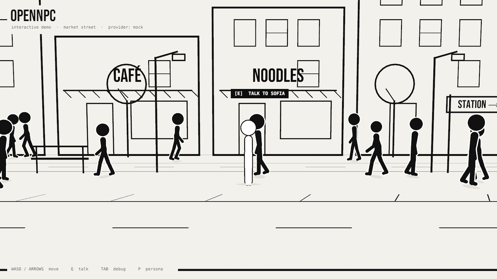

OpenNPC
Personality-driven NPC dialogue.
NPCs aren't just dialogue trees.
They're people with personalities.
OpenNPC interactive demo
Unity WebGL · runs in your browser · no API keys · MockDialogueProvider

Loads the Unity build on click
Loading the street
0%
Demo build not found
The WebGL build is not in web/demo/Build/. Build it with
scripts/build-web.sh, then serve this folder over HTTP
(python -m http.server -d web).
Try: walk up to anyone, press E, type “What do you think about this city?” — then ask someone else the same thing.
Same question. Different minds.
Real output of the offline MockDialogueProvider, checked by the DemoVerify editor step.
“What do you think about this city?”
Every NPC has a personality. Every NPC can have different knowledge, moods, memories and speaking styles. The provider reads the persona — the NPC code never changes.
How it works
- Personawho the NPC is
- Contextwhere, when, what just happened
- OpenNPCmemory · prompt · policy
- Modelmock, local LLM, hosted API
- Responsetext + emotion, back to the NPC
A persona is data
{
"id": "npc_001",
"name": "Ravi",
"occupation": "Taxi Driver",
"personalityTraits": ["impatient", "sarcastic", "helpful"],
"mood": "tired",
"speakingStyle": "Short sentences and sarcastic remarks.",
"likes": ["tea", "old movies"],
"dislikes": ["traffic", "small talk"]
}A provider is swappable
public interface IDialogueProvider
{
string Name { get; }
void Generate(DialogueRequest request,
Action<DialogueResponse> onComplete);
}Mock today. A local model, an OpenAI-compatible server or the OpenNPC backend tomorrow — through a server you control. API keys never ship in a WebGL build.